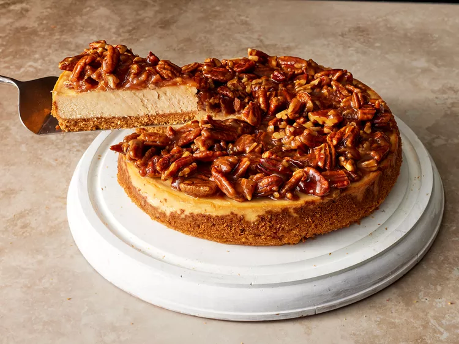

Pecan Pie Cheesecake

The perfect combo featuring the best of each classic dessert
I made this for Thanksgiving and am making it again for Christmas. A huge hit. But the silky texture was what sold all
of us. The crust was amazing. There were no leftovers after eating a huge dinner. People who refused dessert saw other's
reaction to this and then asked for a small slice. Incredible.
Ingredients
Crust
- 1 ½ cups crushed graham crackers
- ¼ cup finely chopped toasted pecans
- ¼ cup granulated sugar
- ½ teaspoon ground cinnamon
- ⅛ teaspoon kosher salt
- 5 tablespoons unsalted butter, melted
Filling
- 3 (8 ounce) packages cream cheese, softened
- 2 cups packed light brown sugar
- 3 large eggs, at room temperature
- 3 tablespoons sour cream
- 2 tablespoons all-purpose flour
- 1 teaspoon vanilla extract
- ¼ teaspoon ground cinnamon
- ⅛ teaspoon kosher salt
Topping
- ½ cup packed light brown sugar
- 1 tablespoon water
- 4 tablespoons unsalted butter
- ½ cup heavy cream
- 1 tablespoon dark rum
- ½ teaspoon ground cinnamon
- ½ teaspoon vanilla extract
- 1 ¾ cups coarsely chopped toasted pecans
Steps
- Preheat the oven to 175°C. Spray a 9-inch springform pan with cooking spray; line bottom with a
round of parchment paper, and wrap outside of pan with heavy duty aluminum foil. Combine graham cracker crumbs, pecans,
sugar, cinnamon, and salt for the crust in a bowl. Stir in melted butter until mixture has a sand-like consistency.
- Press crumb mixture evenly into the bottom and up the sides of the prepared pan using a flat-bottomed measuring cup or
your fingers.
- Bake in the preheated oven on the center oven rack until lightly browned and fragrant, about 10 minutes. Remove from
oven and cool on a wire rack for 15 minutes. Reduce oven temperature to 165°C, and place oven
rack in lower third position.
- Meanwhile, combine cream cheese and brown sugar in a food processor and process until smooth and no lumps remain, about
45 seconds, scraping down sides as needed. Add eggs, 1 at a time, pulsing once after each addition. Add sour cream,
flour, vanilla, cinnamon, and salt; pulse 2 to 3 times or until combined. Pour batter into cooled crust.
- Bake in the hot oven at 165°C on rack in lower third position until center jiggles slightly, 45
to 50 minutes. Turn oven off, prop oven door open slightly, and let cheesecake stand in oven 1 hour. Remove from oven,
discard foil, and run a knife around around edge of crust to release from pan (to avoid cracks while cooling). Cover
with plastic wrap, and chill at least 6 hours or overnight.
- For the topping set a a medium nonstick saucepan over low heat. Add sugar in an even layer and cook over low,
undisturbed, until warm, about 2 minutes. Add water, and stir constantly until all the sugar is melted, about 45
seconds. Add butter, stirring constantly until butter is melted and incorporated, about 30 seconds.
- Increase heat to medium; add heavy cream, rum, cinnamon, and vanilla, and cook, stirring constantly, until well combined
and slightly thickened, about 2 minutes. Add pecans, stirring until well coated, and remove from heat. Cool until room
temperature and thickened, about 30 minutes.
- Remove cheesecake from refrigerator, and carefully remove from springform pan. Place on a serving platter, and top with
cooled pecan pie topping. Serve immediately, or allow cheesecake to soften for 15 minutes before serving.